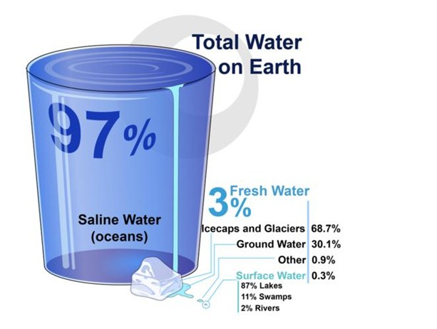
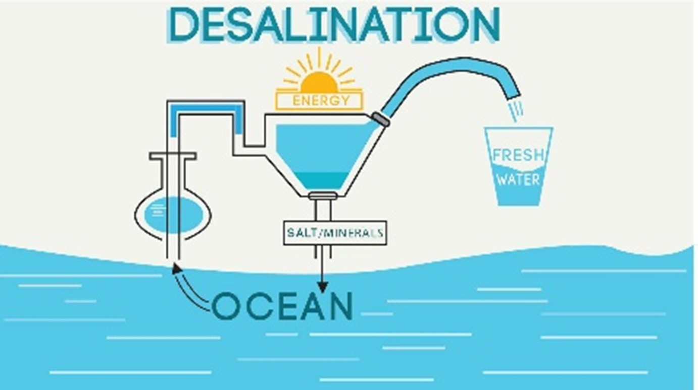
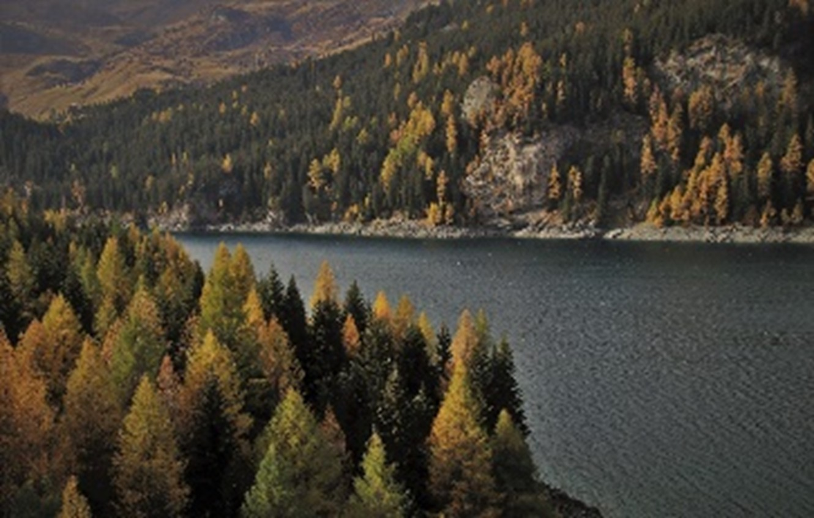
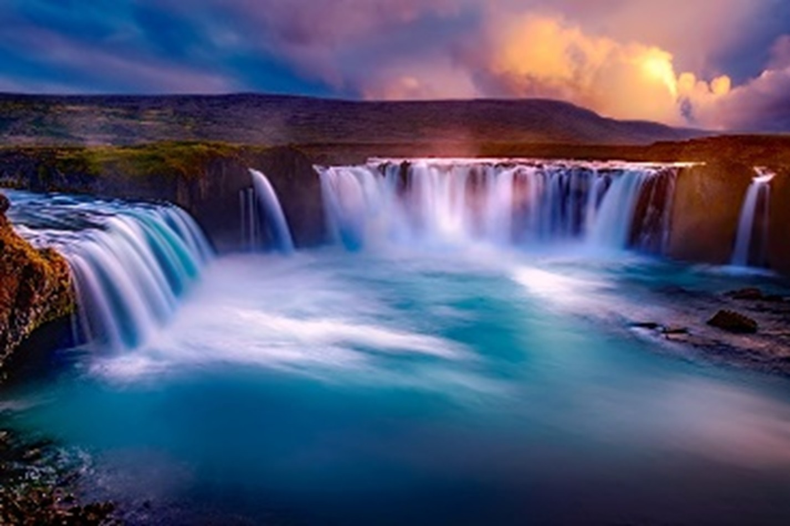
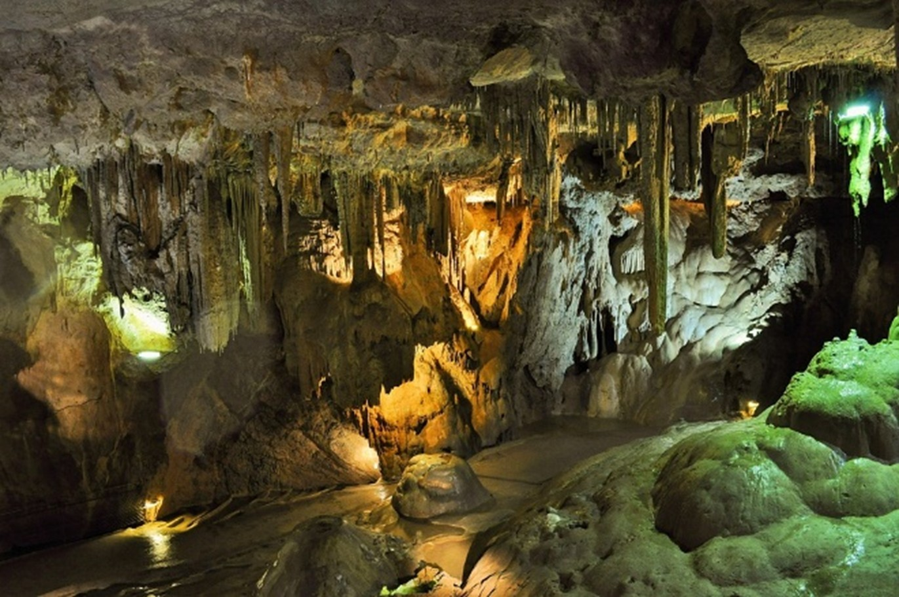
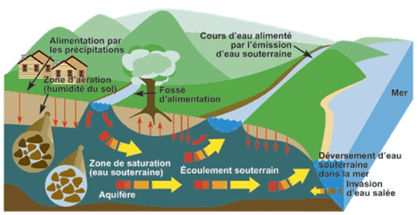
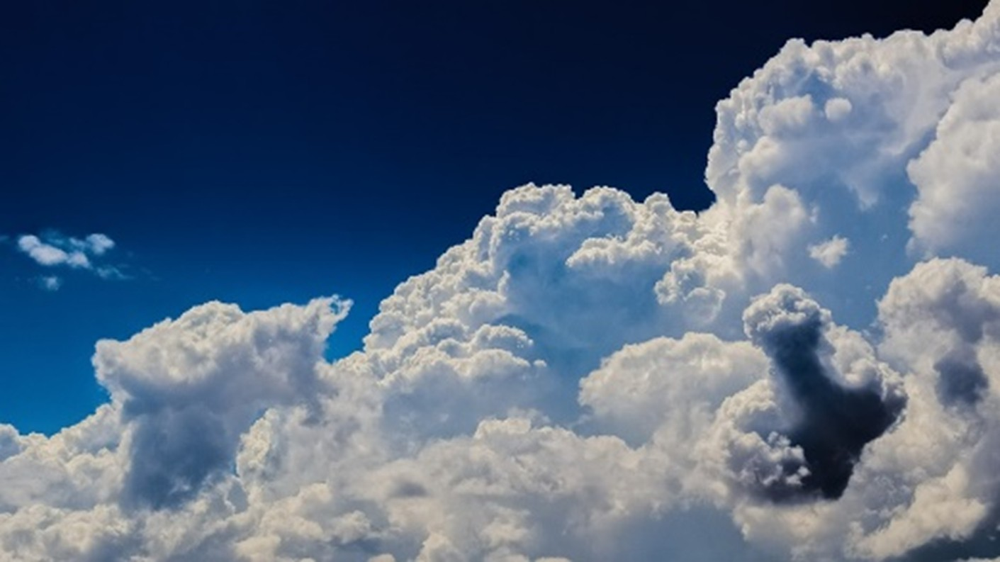

 L’eau se trouve sous différentes formes dans la nature. Environ deux tiers de notre terre est couvert de l’eau : c’est quelque chose qu’on déjà savait depuis l’école primaire. Mais ce qui est important est l’eau qu’on peut utiliser dans notre vie.
Environ 97% de l’eau dans notre planète est constitué de l’eau salée qu’on n’est pas potable. Mais le 3% qui
est potable : c’est assez difficile d’en capter, comme juste un tiers de cette eau potable se trouve sous
forme liquide dans la nature. [5]
 Les plus grandes sources d’eau sur Terre, les océans et les mers sont non potables, car ils sont salés. Mais depuis des siècles c’est possible de dessaler l’eau afin de la transformer en eau potable. On appelle ce processus le dessalement, et il existe plusieurs moyennes de le faire. [6] Vous pouvez trouver ce sujet en cliquant ici (à venir...)
On peut résumer les sources d’eau en quelques catégories :
 L’eau de surface est celle qu’on pense nous connaissons le mieux, mais en réalité il y a plus à dire. Les océans, les mers, les rivières, et les lacs sont tous les corps d’eau qui se trouvent sur la surface. Donc, naturellement ce sont des eaux de surface. [7]
 Cependant, il ne faut pas négliger les terres humides. Les terres humides sont des zones immergées ou imbibées d'eau de façon permanente ou temporaire. Ces zones sont habitats pour des espèces des plantes qui se sont adaptés aux conditions humides. Toutes les zones où l'eau reste suffisamment longtemps pour permettre le développement de ces plantes sont considérés les terres humides. [8]
 Même si on ne les voit pas tous les jours, les eaux souterraines sont la seule source d’eau pour un quart des Canadiens (et beaucoup plus dans des autres pays !). Moins appréciés, ils sont tout aussi important que les eaux de surface. [9]
Les eaux souterraines sont constituées des réserves d’eau stockées dans les roches du sous-sol. On appelle les zones où se trouve les roches poreuses et fissurées, les aquifères. L’eau s’accumule dans des espaces vides sous le sol pour former des nappes. Les nappes qui se trouvent proches de la surface sont appelées des nappes phréatiques.
 Les eaux souterraines existent grâce au cycle de l’eau, particulièrement le processus “infiltration”. À la suite des pluies, une partie de l’eau pénètre dans les pores et les fissures du sol. L’eau s’accumule dans les espaces vides de l’aquifère, et forme une nappe. [10]
Cela étant, l’eau réapparaît sur la surface soit naturellement, en s'écoulant dans des masses d'eau de surface, soit par des activités humaines.
L'eau atmosphérique regroupe tous les types d'eau fournie par l'atmosphère : précipitations (eau de pluie), neige, brouillard, brume et toute humidité atmosphérique, à l'exclusion des eaux du sol.
 L'atmosphère contient environ 13 000 km3 ou 0,0001% du total des sources d'eau naturelles sur la Terre. L'eau existe dans l'atmosphère grâce à l’évaporation des surfaces des plantes vertes (transpiration) et des surfaces de glace (sublimation), qui augmente la quantité de H2O dans l'atmosphère. [11]